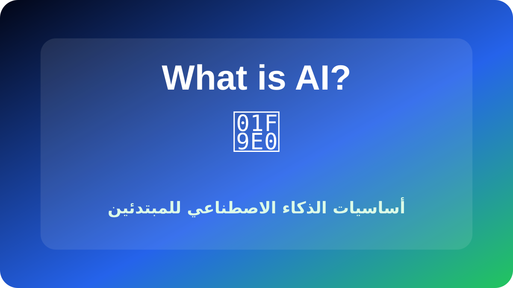
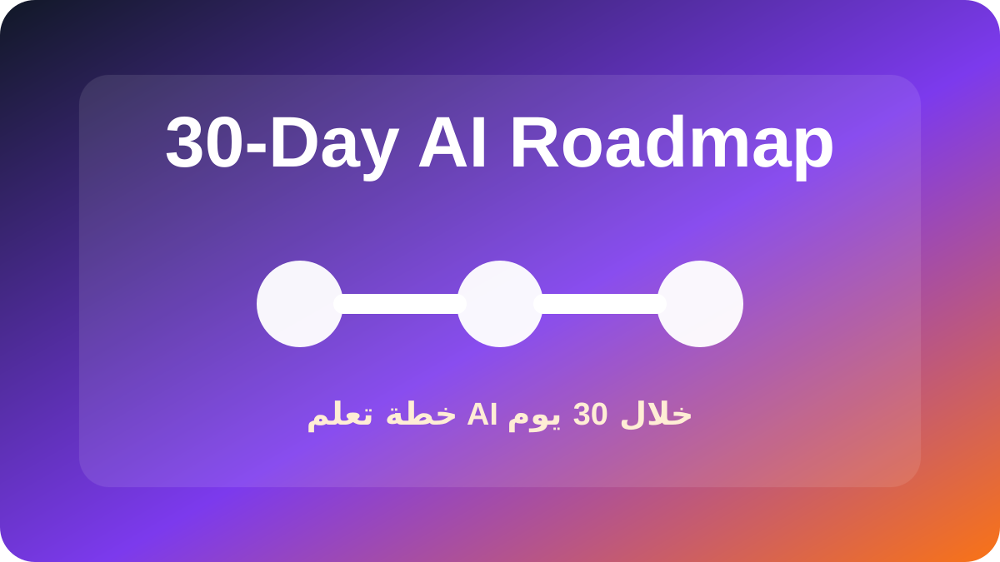
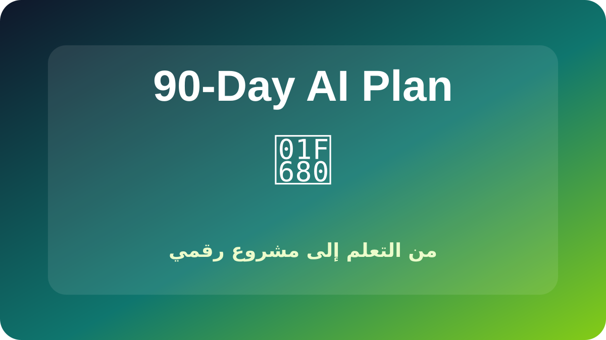
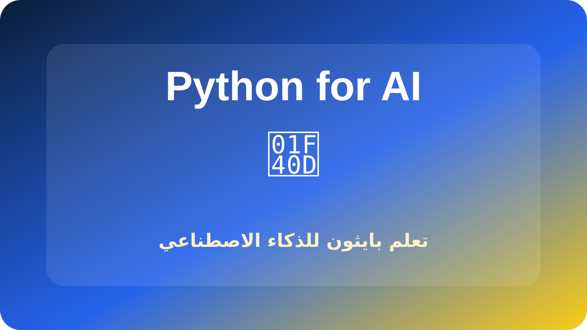
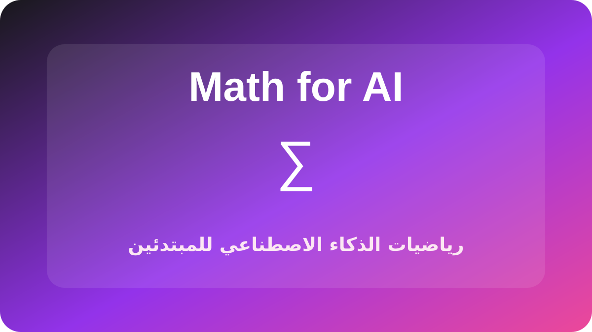
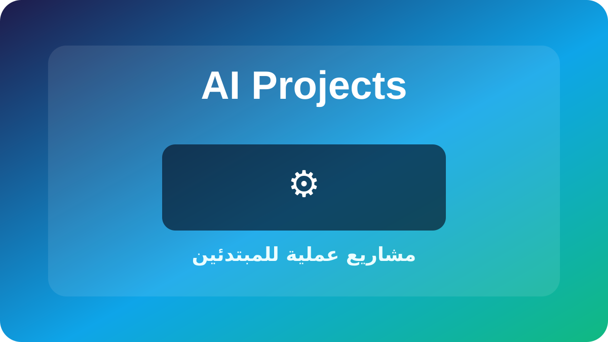

ما هو الذكاء الاصطناعي؟
ابدأ بفهم المفاهيم الأساسية بدون تعقيد.
اقرأ المقال →ابدأ من الأساسيات ثم انتقل إلى التطبيق العملي وبناء مشروع رقمي.
مسار مرتب من الفهم الأساسي إلى التطبيق العملي.

ابدأ بفهم المفاهيم الأساسية بدون تعقيد.
اقرأ المقال →
خطة تطبيقية للانتقال من التعلم إلى التنفيذ.
اقرأ المقال →
بناء أصل رقمي قابل للنمو خلال ثلاثة أشهر.
اقرأ المقال →
تعلم أساسيات بايثون التي تحتاجها في AI.
اقرأ المقال →
المفاهيم الرياضية المهمة بدون تعقيد زائد.
اقرأ المقال →مصادر مجانية عربية وعالمية للبدء بالتعلم.
اقرأ المقال →
طبّق ما تعلمته في مشاريع عملية صغيرة.
اقرأ المقال →خارطة منظمة من البداية إلى بناء مشاريع حقيقية.
اقرأ المقال →افهم الأساسيات، تعلم الأدوات، ثم نفّذ مشاريع صغيرة.